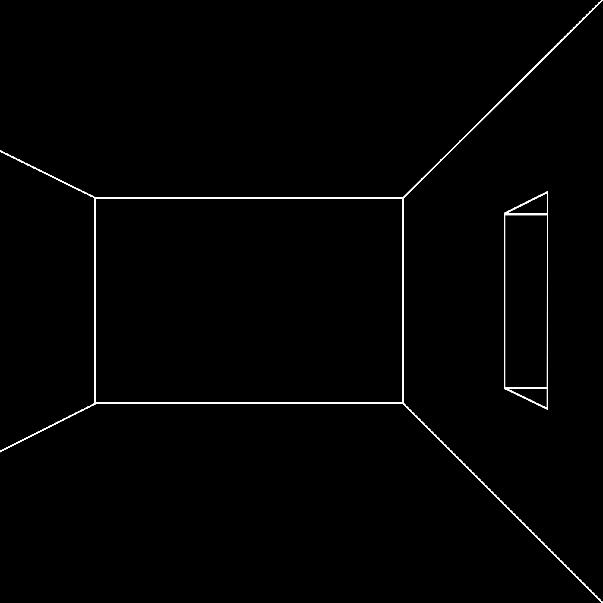

Gaston Bachelard says the single most succinct and astonishing thing: We begin in admiration and we end by organizing our disappointment. The moment of admiration is the experience of something unfiltered, vital and fresh—it could also be horror—and the moment of organization is both the onset of disappointment and its dignification;
the least we can do is dignify our knowingness, the loss of some vitality through familiarization, by admiring not the thing itself but how we can organize it, think about it.